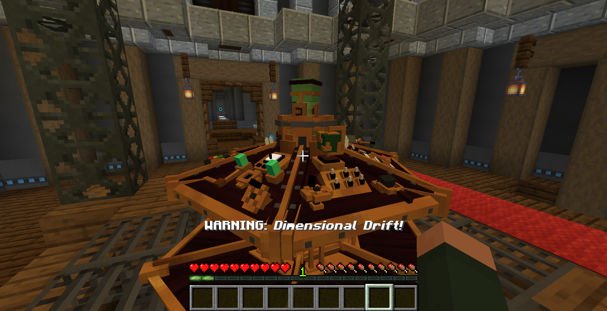
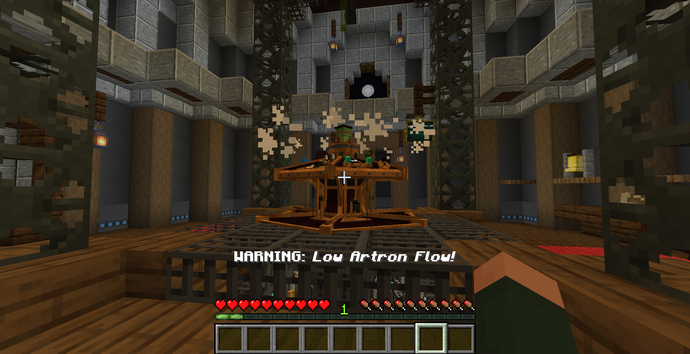
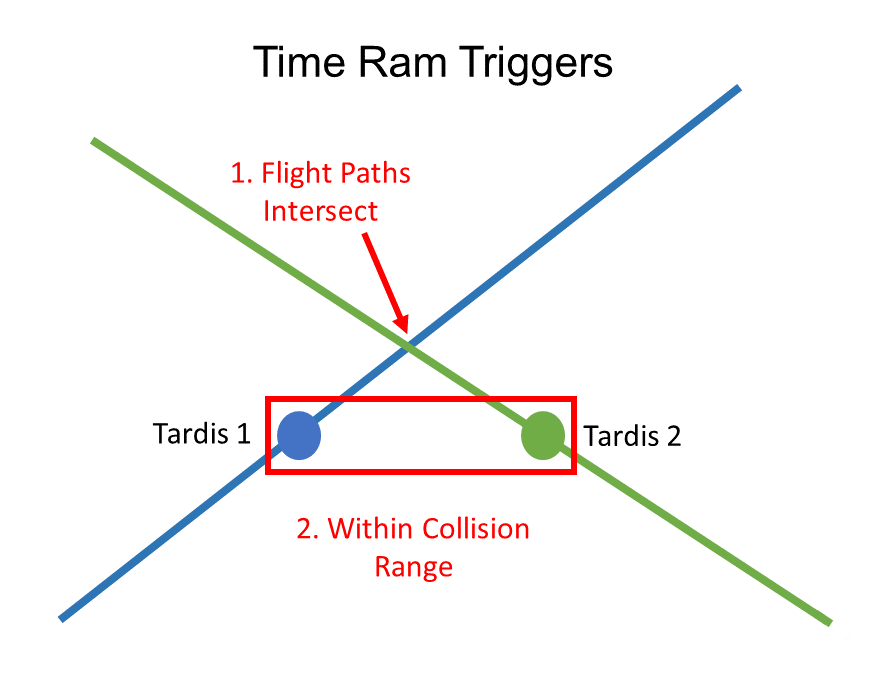
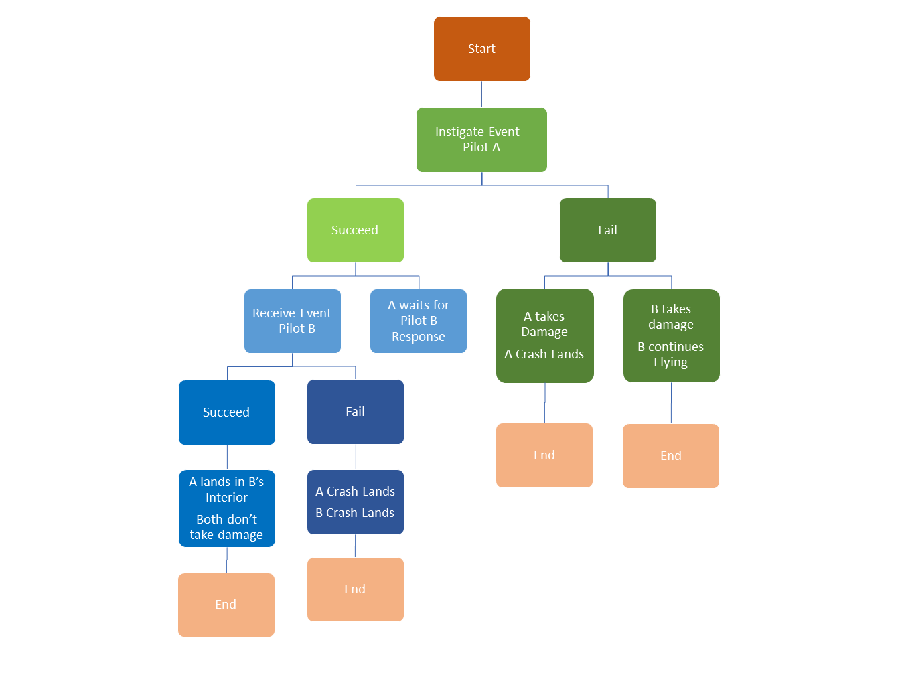

TARDIS 飞行
本章概述了一些指导方针，并解释了飞行机制，让玩家更好地了解他们的塔迪斯。
稳定的飞行
稳定飞行是默认的飞行模式。它在飞行过程中不需要任何额外的输入。
它能让塔迪斯自动起飞和降落。
不稳定的飞行
不稳定飞行是一种更快，但更危险的飞行形式。
它可以让时间飞船以两倍的速度飞行，而燃料消耗只有稳定飞行的一半。
此外，由于时间飞船不需要做任何工作，它更喜欢这种飞行形式。这意味着当你驾驶它时，它将更有可能在情绪上兴高采烈，并开始信任玩家，如果他们能胜任驾驶塔迪斯在这种方法可以更快地增加它的忠诚度。
在飞行过程中，玩家必须通过按正确的控制键来应对各种飞行危险。
玩家有 5-10 秒的时间做出反应。当节流速度设置较低时，响应时间将增加。然而，较低的油门速度将增加运行时间，并可能增加子系统的磨损。
如果你不能及时按下正确的控制按钮，子系统会受损，塔迪斯就会偏离轨道。
最后，在这个飞行模式中，你还必须手动降落塔迪斯。当您到达目的地时，需要将油门速度设置为 0。如果你不这样做，你就会自动进入地狱边缘模式。
漩涡边缘
这种形式的旅行可以让你的塔迪斯留在飞行中，即使你到达你的预定目的地。这让你可以在你突然需要的时候改变塔迪斯的方向，或者给你自己更多的时间来准备塔迪斯之外的潜在危险。
你可以先在不稳定飞行模式下飞行塔迪斯来激活这个模式，当你到达目的地时不要减速。
漩涡边缘可以发生很长一段时间，但在这期间你的子系统和燃料将继续使用。你可以呆在漩涡里，直到必要的飞行子系统崩溃或者塔迪斯耗尽燃料。
飞行中的危险
在不稳定飞行模式中，你必须对前面提到的各种危险做出反应。


这些是 quicktime 事件，包括按下一个或多个控件以避免危险。
未能及时做出反应会导致各种各样的后果。这里将进一步概述每一种危害。
完整清单如下：
- Vortex Scrap
- 时间乱流
- 基准漂移
- 低 Artron 流
- 外部舱壁破裂
- 维度漂移
- 垂直位移误差
- Time Ram
Vortex Scrap
当你的时间船在时间漩涡中时，危险的物体会伤害它。
需要的响应：
- 坐标随机发生器
- 外部朝向选择器
失败的后果：
- 子系统损坏
时间乱流
漩涡中的时间风会引起危险的乱流。
需要的响应：
- 节流阀
失败的后果：
- 子系统损坏
基准漂移
有时候你的时间飞船会偏离航线。
需要的响应：
- 根据指定的漂移类型，修改相应的 X，Y 或 Z 坐标增量
失败的后果：
- 子系统损坏
低 Artron 流
你的时间飞船可能没有给引擎提供足够的燃料。
需要的响应：
- 补充燃料
失败的后果：
- 损失燃料
- 2%的几率使 Artron 电容变成泄漏的 Artron电容
Artron 口袋
你的时间飞船发现了多余的 Artron 能量。
响应这个飞行事件允许塔迪斯获得额外的 Artron 能量。
需要的响应：
- 补充燃料
- 补充燃料
失败的后果：
- 无
外部舱壁破裂
外壳舱壁可能承受了很大的压力。
需要的响应：
- 门
失败的后果：
- 内部的门打开了，它会把你吸进漩涡
维度漂移
时间飞船偏离了目标维度。
需要的响应：
- 维度移相器
失败的后果：
- 目的地维度发生了改变
垂直位移误差
时间飞船的垂直方向可能变得不准确
需要的响应：
- 着陆类型选择器
失败的后果：
- 塔迪斯的着陆类型随机化
Time Ram
如果两个塔迪斯的路径相交，并且塔迪斯在其路径上彼此在30个区块内，则会发生高度危险的危险。

为了成功地避免这种危险，这需要两位玩家的合作。
（这部分没翻译）
The Time Ram has two subevents sent to different pilots
Both events need to be successfully completed to avoid consequences.
- Instigate – Sent to Pilot A
- Receive – Sent to Pilot B
The following flowchart showcases all possible outcomes:

Time Ram - Instigate Event
To successfully complete the Instigate Event, Pilot A must do the following:
Required Response:
- Communicator
- Randomiser
- Throttle
Time Ram - Receive Event
To successfully complete the Receive Event, Pilot B must do the following:
Required Response:
- Communicator
- Randomiser
- Dimensional Control